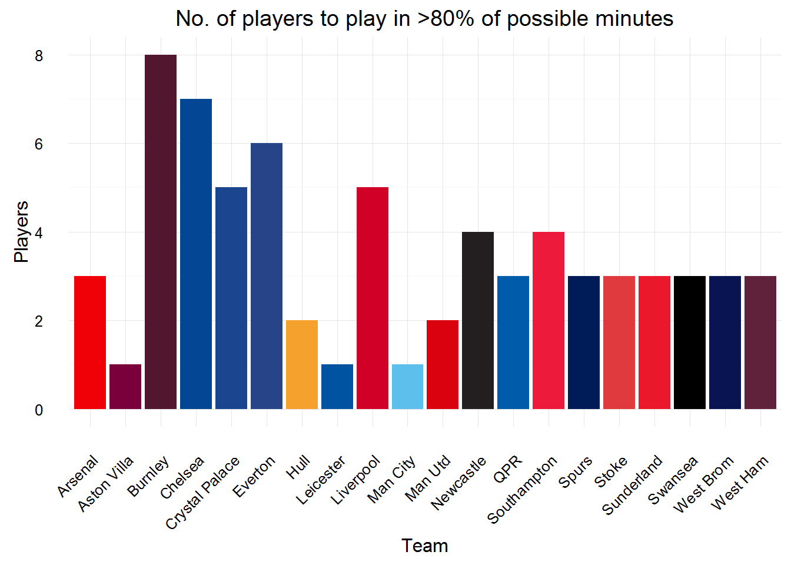

The season201415 dataset contains data for each of the gameweeks in the fantasy.premierleague.com game. The data is player based, so each player in the game could have up to 38 rows of data (1 per gameweek) with variables such as points scored, gameweek value, net transters, etc.
Once the package has been installed and loaded, to access the dataset
data(season201415)The dataset has 24876 rows and 27 columns, its structure is:
## 'data.frame': 24876 obs. of 27 variables:
## $ id : num 1 1 1 1 1 1 1 1 1 1 ...
## $ name : chr "Szczesny" "Szczesny" "Szczesny" "Szczesny" ...
## $ pos : chr "Goalkeeper" "Goalkeeper" "Goalkeeper" "Goalkeeper" ...
## $ team : chr "Arsenal" "Arsenal" "Arsenal" "Arsenal" ...
## $ pts : num 47 47 47 47 47 47 47 47 47 47 ...
## $ value : num 5.2 5.2 5.2 5.2 5.2 5.2 5.2 5.2 5.2 5.2 ...
## $ pct : num 4.7 4.7 4.7 4.7 4.7 4.7 4.7 4.7 4.7 4.7 ...
## $ date : chr "16 Aug 17:30" "23 Aug 17:30" "31 Aug 16:00" "13 Sep 12:45" ...
## $ gw : num 1 2 3 4 5 6 7 8 9 10 ...
## $ opp : chr "CRY(H) 2-1" "EVE(A) 2-2" "LEI(A) 1-1" "MCI(H) 2-2" ...
## $ mins : num 90 90 90 90 90 90 90 90 90 90 ...
## $ goals : num 0 0 0 0 0 0 0 0 0 0 ...
## $ assists : num 0 0 0 0 0 0 0 0 0 0 ...
## $ cs : num 0 0 0 0 1 0 0 0 1 1 ...
## $ ga : num 1 2 1 2 0 1 2 2 0 0 ...
## $ og : num 0 0 0 0 0 0 0 0 0 0 ...
## $ pens_svd : num 0 0 0 0 0 0 0 0 0 0 ...
## $ pens_msd : num 0 0 0 0 0 0 0 0 0 0 ...
## $ yel : num 0 0 1 0 0 0 0 0 0 0 ...
## $ red : num 0 0 0 0 0 0 0 0 0 0 ...
## $ saves : num 1 0 2 6 2 4 1 2 3 2 ...
## $ bonus : num 0 0 0 0 0 0 0 0 0 0 ...
## $ ea_ppi : num 13 5 7 12 14 10 3 7 16 14 ...
## $ bps : num 7 9 15 17 22 13 9 9 22 24 ...
## $ net_transfers: num 0 -9306 -20971 -39686 -15931 ...
## $ gw_val : num 5.5 5.5 5.5 5.5 5.5 5.5 5.5 5.4 5.4 5.4 ...
## $ gw_pts : num 2 1 1 3 6 3 1 1 7 6 ...The number of players per team to have played more than 80% of possible minutes, we’ll use dplyr to manipulate the data and ggplot2 to plot it, we’ll also use the team_pal function included in the fantasysocceR package to style the plot:
library(dplyr)
library(ggplot2)
season201415 %>%
group_by(id, name, team) %>%
summarise(total_mins = sum(mins)) %>%
ungroup() %>%
filter(total_mins > (0.8 * (90 * 38))) %>%
group_by(team) %>%
summarise(n_players = n()) %>%
ggplot(aes(x = team, y = n_players, fill = team)) +
geom_bar(stat = "identity") +
scale_fill_manual(values = team_pal(), guide=F) +
labs(x = "Team",
y = "Players",
title = "No. of players to play in >80% of possible minutes") +
theme_minimal() +
theme(axis.text.x=element_text(angle=45, vjust=1, hjust=1))